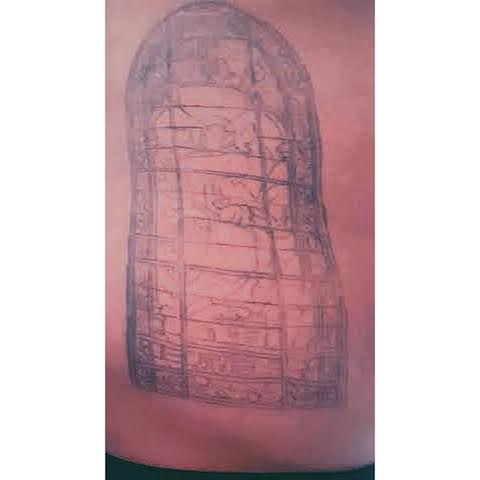
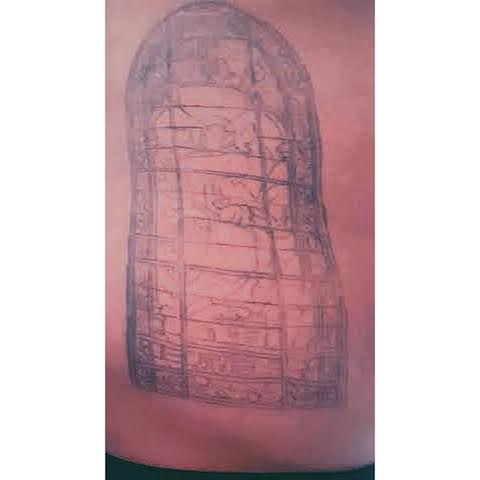
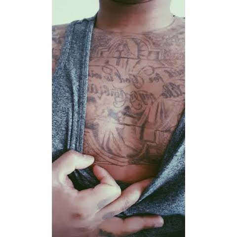
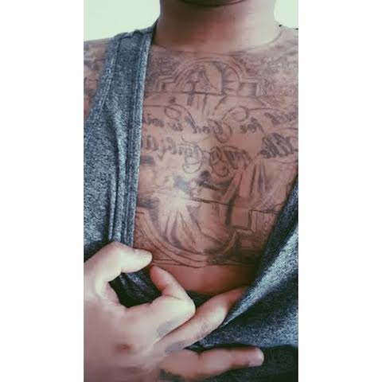

Catalogue
Modèle: 26ans - Paris , France.
 

 

Le tatouage religion : acte pieux ou sacrilège ? Le tatouage religion témoigne d’un curieux paradoxe : on aime encrer sur sa peau des signes appartenant au christianisme ou à l’islam, voire même au judaïsme, alors même que ces religions monothéistes condamnent les altérations corporelles volontaires et – par définition – le tattoo. Qu’à cela ne tienne : au gré des décennies, le tatouage a su s’emparer des codes et langages de bien des mondes – la religion ne fait pas exception à la règle. Tatouages de croix, tatouages d’anges, tatouages de chapelets et autres : des symboles religieux forts se retrouvent aujourd’hui inscrits pour toujours sur les peaux. Le tattoo religieux peut revêtir de multiples habits, à commencer par les trois grands symboles des religions monothéistes : la croix du Christ, l’Etoile de David, et le croissant et l’étoile à cinq branches. Les symboles suivants jouissent également d’une popularité certaine chez les tatouées et les tatoués : la roue du Dharma pour le bouddhisme, la fleur de lotus dans l’hindouisme, le khanda dans le sikhisme, ou encore le taiji chez les taoïstes. Liste non-exhaustive…